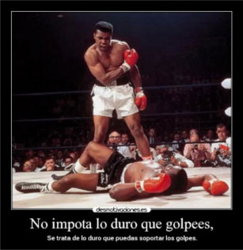

Decir que el boxeo es un deporte de contacto creo que se queda corto, cualquiera que conozca un poco sabe que es un deporte agresivo y que tiene muchas lesiones.
A continuación veremos los inconvenientes de este deporte y las ventajas de practicarlo.
| Al combatir en un combate de boxeo | |||
|---|---|---|---|
| Tipo de lesiones | Porcentaje de posibilidad de lesion por combate | Causa de la lesion | Como minimizar los daños |
| Laceración o daño facial | 50% | Por golpez en la cara muy repetidas veces | Usar vaselina en la cara para resbalar los golpes |
| 80% | |||
| Lesión de mano o muñeca | 17% | Por dar un mal golpe o un vendaje malo | Mejor vendaje |
| Lesión en ojos | 14% | Por no cerrar los ojos o golpes ilegales | Es muy difícil minimizar esto sin protecciones |
| Lesión o fractura de nariz | 5% | Por recibir muchos golpes en la nariz | Existen sueros que sirven para endurecer la nariz(Solo utilizado de forma profecional) |
¿El boxeo provoca lesiones a largo plazo?
La respuesta es si, según un estudio de la Asociación Americana de Cirujanos Neurológicos, el 90% de los boxeadores desarrollarán alguna lesión cerebral al final de sus carreras como consecuencia de la acumulación de todos los golpes recibidos.
Para saber por que ocurre esto debemos saber que pasa en nuestro cerebro cuando nos golpean constantemente y es que esto crea una rápida deceleración o aceleración craneal de los choques provocan una "despolarización" de las neuronas, una especie de cortocircuito de los neurotransmisores que producen una "inundación" de compuestos químicos en el cerebro.
Estas lesiones neurológicas llamadas en el deporte Demencia pugilística provocan dificultades en la audición, párkinson, vértigos y todo tipo de lesiones cerebrales crónicas, neurológicas y cognitivas debidas a la exposición continua a estas pequeñas conmociones cerebrales.
Tras leer todos los posibles riesgos a los que enfrenta los boxeadores ninguna madre dejaría a su hijo o hija acercarse a este deporte, pero hay que recalcar que la información esta recopilada de boxeadores profesionales los cuales viven gracias a este deporte y a su audiencia, siempre se pueden realizar este deporte a modo de entretenimiento y para mantenerse en forma además de muchas mas ventajas.
Además de que nadie te obliga a pelear, siempre puedes pegar a un saco.
Es evidente que el boxeo es un ejercicio físico muy exigente el cual puede mantenerte un muy buena forma puesto que en este deporte no puedes estar quieto ni un solo segundo y al utilizar todo el cuerpo es el deporte perfecto para perder grasa o para definir músculos.
Aun que el boxeo no sea considerado un arte marcial mantiene su filosofía en cuanto a la disciplina y el respeto que trasmiten los entrenadores a sus alumnos además que el boxeo al ser un deporte en el que no gana el que mas fuerte si no el que mas aguante forja un carácter de constancia y de trabajo que creo que es necesario aprender en esta vida.
Además de ser un deporte muy completo sirve como método para defenderse lo cual viene genial puesto que nunca sabes las situaciones que te vas a encontrar en tu vida cotidiana
Os mentiría si dijera que nunca os aréis daño entrenado este deporte pero llevo 1 año y medio practicándolo y sí me he lesionado en varias ocasiones pero puedo afirmar sin ninguna duda que este deporte ha cambiado mi vida, me ha hecho comprender que la vida es para los valientes que se levantan todos los días a comerse el mundo que todo en esta vida se puede conseguir con esfuerzo y constancia.
"Ni tu, ni yo, ni nadie golpea más fuerte que la vida; pero no importa lo fuerte que golpeas sino lo fuerte que pueden golpearte, y lo aguantas mientras avanzas, hay que soportar sin dejar de avanzar. ¡Así es como se gana!"
